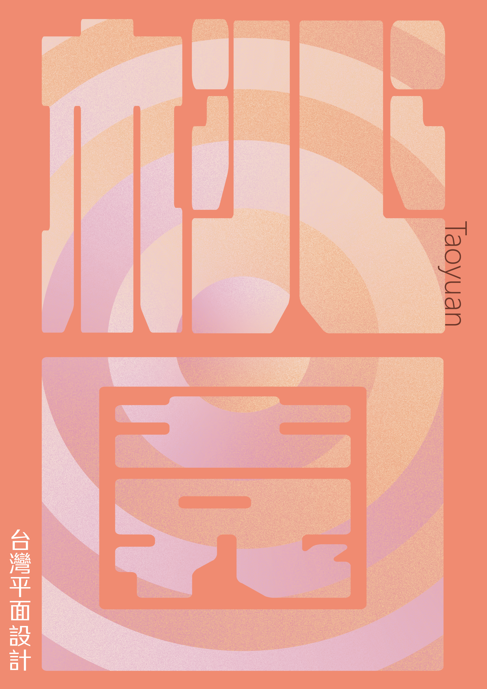
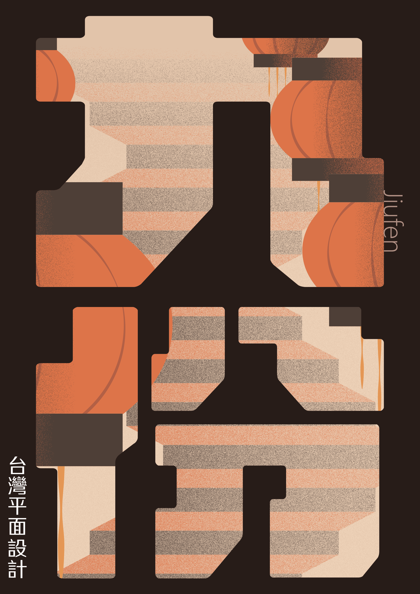
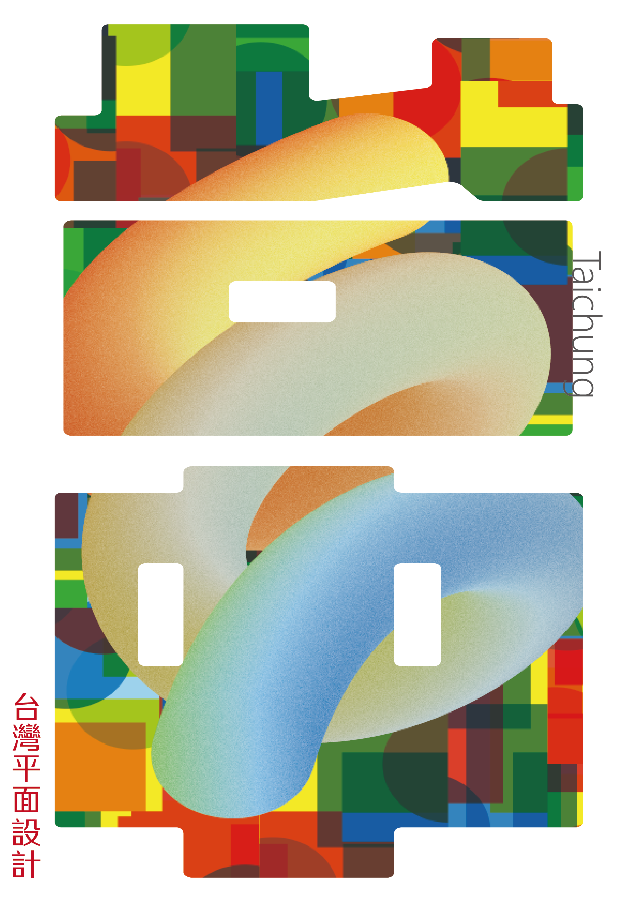
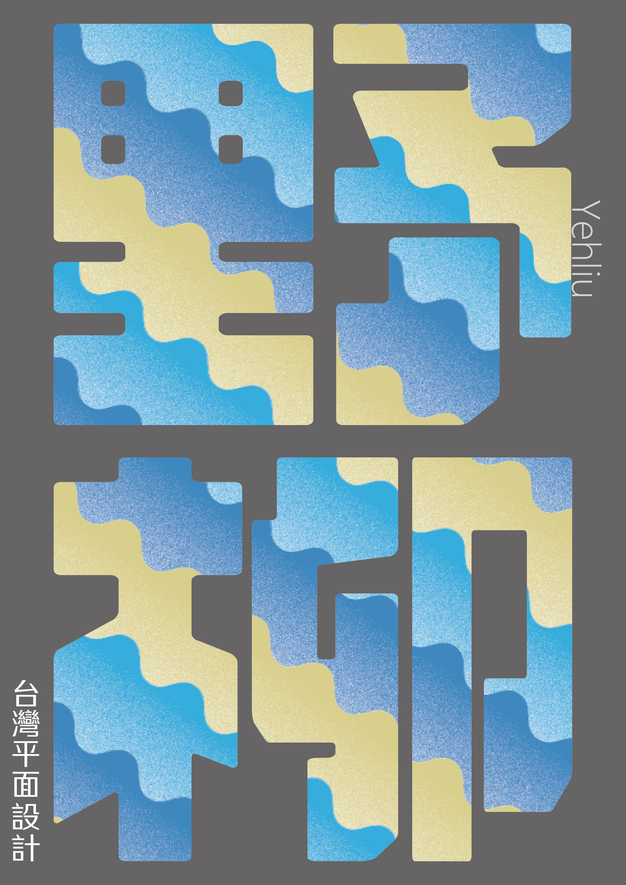

Taiwan Graphics
2023/08/15～22台湾の旅にて実際に足を運んだ都市のイメージや感じた雰囲気をグラフィックに落とし込んだ。
Airi Tokiwa

台北
首都であり都会的な都市。街中に沢山のバイクが常に走っている光景は今までに見ない光景。MRTの路線図をフリーハンドで描き、そこから展開させたグラフィック。

桃園
名前の通り、春には桃の花や桜が咲き、昔桃の木が多く植えられていたことに由来するピンクに溢れた都市。桃園国際空港は今回の旅の始まりと終わり、区切りの場所となった。

九份
歴史的な町並み。ノスタルジックな雰囲気と温かみのある街中。長く続く階段、先まで照らしてくれる提灯。登っても登っても階段が続く先の見えない空間を表現。

台中
レインボービレッジやアートや芸術のクリエイティブな色鮮やかな都市。美食の都市でもあり、刀削麺イメージのオブジェクトを中心に。

雲林
宗教文化や農業、食べ歩きや海産物も盛んで色々な文化が混在している都市。実際に関わった学生たちや現地のフレンドリーな人々の温かみも。

野柳
奇岩と海が合わさった特徴的な景観はすべて自然。野柳岬の先端まで登り波打つ鼓動、下山後飲むマンゴースムージーは絶品。海岸の波、岩と海の眺めは絶景。